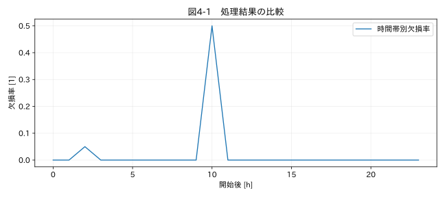

第I部 生データを理解する / 第04章
データ品質を数値化する
学習目標
欠損率や重複率の分母を定義し、計測目的に応じた品質表を作る。全欠損や未評価を0件の異常と取り違えず、品質指標の限界を説明する。
4.1 平均温度は正常でもデータは不十分
24時間の温度試験で30分の記録が欠けた。欠けた時間が安定運転なら、平均温度への影響は小さいかもしれない。しかし温度上限を超えた時間だけ記録が落ちたなら、観測値の平均は低く偏る。同じ欠損率でも意味は違う。
データ品質は一つの点数にまとめる前に、複数の観点で確認する。完全性は必要な情報が存在するか、一意性は同じ観測を重複して扱っていないか、一貫性は列間・条件間で矛盾がないか、妥当性は形式や物理範囲に合うか、時間的整合性は時刻と取得順序に矛盾がないかを指す。ここでの名称は本書の作業用分類で、規格適合を宣言するものではない。
4.2 分母を決める
値の欠損率は r_missing = 欠損セル数 / 期待する測定セル数 と定義する。単一列で記録が全行残っていれば、期待する測定セル数を行数と置ける。しかしレコードごと欠落した場合、受領行数を分母にしても完全性は測れない。予定周期と試験期間から予定スロット数を計算し、スロットとの対応を検査する必要がある。
例えば1分周期で24時間、開始を含み終了を含まない区間なら予定数は1440だ。受領数1400、受領値の空欄20なら、有効値は1380で、予定数基準の欠損は60/1440となる。一方、受領行内の空欄率は20/1400である。両者は異なる問いに答えている。試験の開始・終了時刻を含める規則も記録する。
4.3 重複率の二つの定義
時刻が [0,1,1,2] のとき、余分な記録を数えれば1/4、重複に属する全行を数えれば2/4になる。本書のtime_duplicateフラグは後者である。最初の1を正常と決めてしまうと、どちらが再送でどちらが本来の記録かという未解決の問題が隠れるためだ。
同じ時刻でも測定器IDが異なれば、重複とは限らない。一意性のキーは試験ID、機器ID、チャンネル、シーケンス番号などを含めて設計する。時刻だけを唯一の識別子にすることは避ける。
| 指標 | 分母の例 | 数値だけでは分からないこと |
|---|---|---|
| 欠損率 | 予定スロット数 | 欠損の原因と発生時の現象 |
| 重複所属率 | 受領行数 | 再送か独立測定か |
| 異常候補率 | 評価した有効値数 | 測定不具合か実現象か |
| 変換不能率 | 受領行数 | 誤記か単位違いか |
| Hampel評価率 | 受領行数 | 窓不足区間の正常性 |
4.4 未評価を数える
局所的な外れ値検出には前後の点が必要である。11点の完全窓を使うなら、端の5点ずつや欠損に接する窓は評価できない。候補数0、評価数0を「良好」と表示してはいけない。欠損率が100%の列に平均値や標準偏差を出しても意味がなく、レポートでは未評価と表示する。
品質レポートは、件数、率、分母、未評価数、規則の版、対象期間を一緒に示す。異常候補は重複し得るので、各フラグ件数の合計を異常行数としない。飽和した同じ点に範囲外と外れ値のフラグが付いているかもしれない。
関連する詳細実験は実践補講に掲載。入力形式・同期・補間・校正・多変量・チャンク境界を扱う。
実行するコードと結果
run.py · 共通処理の全ソース
教材フォルダで python examples/chapter04/run.py を実行。以下は省略のないスクリプト。共通モジュールは教材一式に含む。
from pathlib import Path
import sys
ROOT=Path(__file__).resolve().parents[2]
sys.path.insert(0,str(ROOT))
sys.path.insert(0,str(ROOT/'examples'))
import numpy as np
import pandas as pd
from common import load,truth,seconds,plot
from tsclean.core import numeric,timestamps,time_flags,hampel,freeze_candidates,interpolate_short,compare
df=load('01_temperature');x=pd.to_numeric(df['測定値'],errors='coerce')
n=len(x);missing=x.isna().sum()
print(f'行数={n}, 欠損={missing}, 欠損率={missing/n:.6f}, 完全性={1-missing/n:.6f}')
hours=(seconds(df)//3600).astype(int)
rate=x.isna().groupby(hours).mean()
plot(4,rate.index,{'時間帯別欠損率':rate},'欠損率 [1]',xlabel='開始後 [h]')
検証環境での実行結果を開く
行数=1440, 欠損=33, 欠損率=0.022917, 完全性=0.977083

4.5 時間帯ごとの品質を見る
温度教材は1440行中33行が欠損している。受領行を分母にした欠損率は約2.29%である。図4-1では、この欠損が特定の時間帯に集中していることが分かる。全期間の率だけなら見落とす構造だ。運転モード別、機器別、試作品別にも同じ集計を行うと、測定条件に依存した問題を探しやすい。
本書のアプリの NO_RULE_VIOLATION_DETECTED は、指定規則による違反候補がないという限定された状態である。校正の適切さや測定系の帯域までは判定しない。製品合否とデータ品質判定を同じラベルにしない。
演習
基礎演習
温度教材の欠損数と欠損率を手計算し、標準出力と比較する。
応用演習
上記の予定1440、受領1400、空欄20の例で、受領率、有効値率、受領行内空欄率を計算する。
実務演習
二つの試作品の平均温度差が0.3 °Cだった。一方の欠損率は0.1%、他方は8%で、高温時に集中していた。平均温度だけで優劣を決めてよいか。
演習解答・解説を表示する
基礎：33/1440=0.0229167、約2.29%。完全性は同じ分母を使えば約97.71%となる。
応用：受領率は1400/1440≈97.22%、有効値率は1380/1440≈95.83%、受領行内空欄率は20/1400≈1.43%。定義を省くと比較不能になる。
実務：決められない。欠損が値に依存する可能性があり、平均差が選択バイアスで生じた疑いがある。同じ運転条件・共通観測時間で比較し、欠損原因を調べ、必要なら再測定する。単に8%を補間して揃えることは根拠にならない。
章末まとめ
品質指標は、定義と分母を添えて使う。全体の率と時間・条件別の分布を組み合わせ、未評価を明示することが、数値を過信しないための基本である。